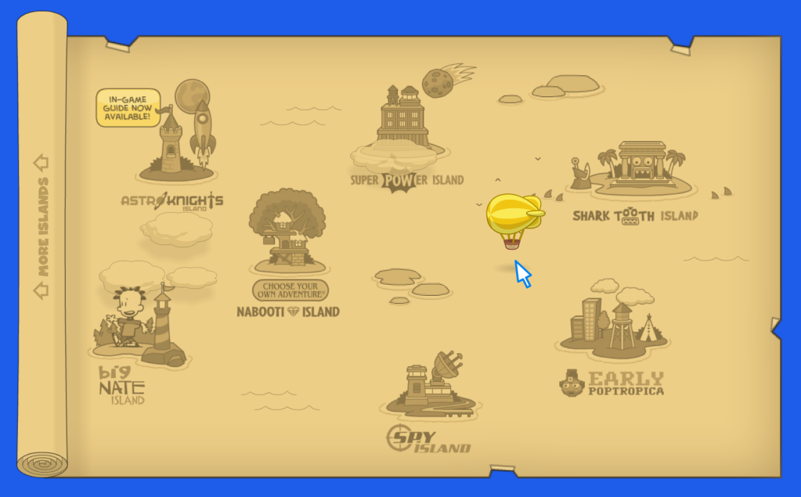

Poptropica was an online adventure game from my childhood that housed dozens of stories, each contained on their own special island. Each island was themed around a central plot point (e.g. time travel, pirates) and challenge children to problem solve and complete fetch quests to achieve the island's overall goal.
